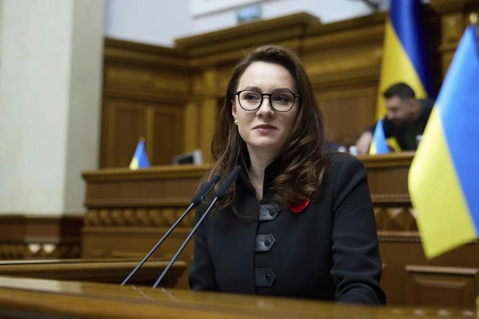

世界苦茶07月18日新闻 | 30条 | 乌克兰内阁更新

乌克兰内阁更新 | 以色列迫使叙利亚政府撤出该国一地区 | 美国继续削减对外援助和媒体资金 | 英国降低投票年龄到16岁
今日三条新闻分析
苦茶数据
美元兑人民币：7.18（昨日7.18，前日7.18）
美元兑日元：148.72（昨日148.49，前日148.88）
上证指数：3535（昨日3506，前日3498）
标普500指数：6297（昨日6263，前日6243）
比特币：120330（昨日118435，前日117459）
布伦特原油：70.12（昨日68.78，前日68.89）
中国新闻
• 杭州自来水异味事件 ：浙江省杭州市余杭区多个小区自来水散发恶臭，水务公司回应称更换供水水源后已恢复正常。据澎湃新闻报道，星期三杭州市余杭区仁和街道及良渚街道部分区域自来水出现明显异味，问题持续近15小时。浙江省杭州余杭水务控股集团有限公司当晚发布通报，称针对自来水气味异常，公司立即启动应急预案，切换其他水源供水，同时组织人员冲洗管网。
• 黄杨钿甜耳环风波官方发布公告 ：“小赵丽颖”黄杨钿甜早前在于5月11日，在微博贴出自己佩戴一对祖母绿耳环的照片，引起网民猜测耳环出自奢华品牌且价值高达230万元人民币，阴差阳错导致曾任公务员的父亲被疑贪污，惊动中国官方立案调查。中国18岁女星黄杨钿甜凭借2025年年初的古装喜剧《五福临门》走红，不料没多久就在5月陷入“天价耳环”风波，至今未曾更新微博。她在7月9日刚过18岁生日，微博自动贴出生日动态，有粉丝留言祝她生日快乐，也有吃瓜的网民留言：“耳环事件没后续了吗？”据报道，相关单位在7月16日公开调查结果，指出网传黄杨钿甜所佩戴的“天价耳环”，实为黄杨钿甜母亲的朋友在2016年赠送的仿制品，价值不足300人民币。此外，曾出现在黄杨钿甜照片中的“亿元别墅”，只是她多年前路过惠州某别墅时随手拍摄的。
• 韩拟重启中日韩峰会 ：韩国外交部长提名人选赵显说，将深化韩美同盟，推动韩中日领导人会议早日举行，并为重启韩朝对话创造条件。据韩联社报道，赵显星期四在韩国国会人事听证会上说，当前国际局势及安全、经贸环境正经历前所未有的动荡，亟需推进务实外交，切实维护国家利益。他称，将把韩美关系发展为面向未来的全面战略同盟，积极应对关税调整、同盟“现代化”等核心议题，并强调将与美国政府保持密切沟通，推动韩美同盟朝着互利共赢的方向不断发展，并在这个基础上进一步巩固韩美日三边安全合作。
• 王沪宁谈扩大内需 ：中国全国政协主席王沪宁说，全方位扩大国内需求是保持中国经济长期持续健康发展的需要，是战略之举。据新华社报道，王沪宁星期三在全方位扩大国内需求调研协商座谈会上呼吁，要以扩大消费为基础，发挥投资的关键作用，重视供给体系的提升，为构建新发展格局、推动高质量发展贡献智慧和力量。他指出，全方位扩大国内需求是保持中国经济长期持续健康发展的需要，是满足人民日益增长的美好生活的需要，是战略之举。
亚太印太新闻
• 马哈迪批司法危机 ：马来西亚前首相马哈迪说，马国正面临前所未有的司法危机，国家不仅没有首席大法官，还会出现多达30个法官职位悬空，质疑当局所谓改革已沦为空谈。综合马国媒体报道，马哈迪在脸书发文说：“这是国家从未发生过的事，现在却声称有泄密事件，还说泄漏的内容不正确。如果真不正确，为何还要对泄密者采取行动？”他质疑各种指控接踵而来，却未见有负责任的解释，反而一再有人呼吁不要把法官任命政治化、不要把特赦附录政治化、不要把马国机场控股课题政治化，也不要讨论涉及种族、宗教和王室的课议。
• 台师大教练涉抽血威胁 ：台湾师范大学女足教练周台英被曝要求球员配合抽血研究，不配合就威胁扣学分。教育部调查确认她违反《人体研究法》，但教评会仅作出不予晋升的处分，未予解聘，被外界质疑处罚过轻。面对争议，台师大称将重启审议程序，并暂时停聘周台英。综合台湾《联合报》《上报》等报道，民进党立委陈培瑜2024年11月28日在立法院教育及文化委员会质询时揭露，台师大女足教练周台英要求球员配合实验长达数年，包括连续14天、每天三次抽血，初期甚至由无医事资格人员操作。若学生不配合，就会被威胁扣住毕业学分或退学等。事件曝光后，引发舆论哗然，社会质疑校方纵容霸凌与程序不当。在舆论压力下，台湾教育部、国科会及台师大先后介入调查，事态迅速升级为全社会关注的学术伦理风暴。
• 印度空难疑人为操作 ：《华尔街日报》星期三引述知情人士报道，上个月坠毁的印度航空客机的两名飞行员在驾驶舱内的对话录音显示，机长亲手关闭了控制燃油供应的关键开关。知情人士透露，美国调查人员初步评估飞行记录器中的对话内容后认为，机长手动关闭了控制两台发动机燃油供应的开关。这一判断来自美国当局对事故所获证据的早期分析。据报，在空难发生前，副驾驶昆德正在操控飞机，他曾质疑经验更丰富的机长为何将燃油开关转至“切断”位置，并表现出惊讶与恐慌，而机长萨布哈瓦尔似乎始终保持冷静。
• 三星会长终审判无罪 ：韩国三星电子会长李在镕涉嫌不当合并与会计造假案终审星期四宣判，法院维持原判，认定李在镕无罪。据韩联社报道，韩国最高法院大法院审判第三庭星期四作出上述判决。三星集团未来战略室前室长崔志成等与李在镕一同被起诉的13人，也全部被判无罪。李在镕等人涉嫌于2015年在子公司第一毛织和三星物产两家企业的合并过程中，参与非法交易、股价操作，以及会计造假，于2020年9月被检方起诉。一审经过三年零五个月的审理，于去年2月宣判李在镕无罪。二审于今年2月维持一审判决，认定李在镕无罪。
科技新闻
• 美推进加密货币立法 ：在美国总统特朗普出面斡旋后，美国国会众议院星期三表决通过程序性动议，将推进三项涉及加密货币的立法。这是美国数码资产产业在联邦层面争取明确监管的重大进展。首项法案涉及稳定币监管框架。这项法案已获参议院批准，若众议院也通过，该法案将提交特朗普签署。稳定币是一类锚定美元、价值相对稳定的加密货币，因交易成本低、转账快速，广受市场欢迎。
• 黑客攻击台半导体业 ：网络安全公司Proofpoint的研究显示，多个与中国大陆有关的黑客组织正在加大力度，对台湾半导体产业和投资分析师发起一系列网络攻击，以盗取相关数据和信息。据路透社报道，Proofpoint研究人员凯利星期三说：“我们观察到一些过去从未被攻击的实体如今成为攻击目标。”这次网络攻击行动，由至少三个与中国大陆有关的黑客组织于今年3月至6月间发起，部分攻击可能仍在持续。
• Meta又挖走苹果大模型团队两名核心专家： Meta公司在挖走苹果AI模型团队负责人庞若鸣后不久，又从苹果招募了两名关键AI研究员。据知情人士透露，这家社交网络巨头已聘请马克·李和汤姆·甘特，为其超级智能实验室团队工作。知情人士称，马克·李在近日离开了苹果，已开始在Meta工作。甘特将在不久后入职。这些举措是整个科技行业争夺人工智能人才的一部分。彭博社此前报道，甘特在上月离开了苹果公司。他和马克·李都曾与苹果大语言模型团队主管庞若鸣紧密合作过。庞若鸣本月早些时候已被Meta挖走。彭博社称，为了挖到庞若鸣，Meta开出了价值超过两亿美元的多年薪酬方案。
• Meta高层隐私案和解 ：马克·扎克伯格和其他现任和前任 Meta 高管已就一群股东提起的诉讼达成和解，这些股东要求赔偿80亿美元，以弥补这些高管在剑桥分析数据丑闻中允许Facebook用户隐私被反复侵犯而给公司造成的损失。双方并未透露和解细节。Facebook 股东对马克·扎克伯格、前首席运营官谢丽尔·桑德伯格和其他高管提起诉讼，指控他们未经用户同意与第三方应用共享用户数据，故意违反联邦贸易委员会的协议。2019年，美国联邦贸易委员会对Facebook处以50亿美元的罚款，原因是其未能遵守2012年达成的一项协议，该协议要求这家社媒公司保护用户的个人数据。
财经新闻
• 超豪车消费税扩大 ：中国将调整超豪华小汽车消费税政策，扩大超豪华小汽车征税范围，新能源车也被纳入征税范围。中国财政部和税务总局星期四发布公告，《关于对超豪华小汽车加征消费税有关事项的通知》中，超豪华小汽车征收范围调整为“每辆零售价格90万元人民币及以上的各种动力类型的乘用车和中轻型商用客车”。《关于调整小汽车进口环节消费税的通知》规定的超豪华小汽车进口环节消费税的征收范围相应调整。上述调整将从星期天起执行。根据现有的《关于对超豪华小汽车加征消费税有关事项的通知》，征收范围为每辆零售价格130万元及以上的乘用车和中轻型商用客车，即乘用车和中轻型商用客车子税目中的超豪华小汽车。
• 泰国关税谈判承压 ：越南和印度尼西亚接连与美国达成协议降低对等关税税率，令仍在谈判中的泰国面临巨大压力。若无法争取到更低税率，外国投资者的目光将从泰国转向越南和印尼。泰国《民族报》报道，越南和印尼的关税税率分别降至20%和19%，给泰国带来额外压力，须与美国谈成对泰国商品征收的关税从36%调低至18%的协议，才能避免在与越南、印尼、菲律宾和马来西亚等亚细安国家的竞争中处于劣势。联昌泰银行执行副总裁兼研究主管阿蒙提说，如果无法达成与越南和印尼相当的关税协议，泰国可能面对更高的进口税率。这不利于泰国的出口发展，也会削弱吸引外国直接投资的能力。
• 美对中石墨征重税 ：美国商务部星期四认定中国进口石墨存在不公平补贴，决定对中国的阳极级石墨征收93.5%的初步反倾销税。石墨是电动车电池的关键材料。美国商务部说，这项命令将影响2023年价值3.471亿美元的进口产品。反倾销税适用于纯度至少为碳含量90%的阳极级石墨材料，可以是合成石墨、天然石墨或两者的混合物。
• 美团称外卖战不理性 ：中国互联网巨头美团高管称，美团被动卷入外卖战，而且外卖大战存在非理性竞争情况。互联网巨头京东2月正式入局外卖市场，4月又推出“百亿补贴”。美团和另一互联网巨头阿里巴巴旗下的淘宝闪购快速加入战局，由此拉开最近一轮外卖行业大战的序幕。美团核心本地商业首席执行官王莆中星期二接受中国“晚点 LatePost”的访问。对于阿里高调继续掀起外卖大战，开局就是500亿人民币补贴投入，王莆中回应时说，肯定是一个非理性的竞争。
• 美企对华投资创新低 ：非营利组织展开的最新调查显示，不到一半的受调查美国企业称计划2025年在中国展开投资，创下自2006年机构开始发出相似问题以来的最低比率。据彭博社报道，总部设在美国华盛顿的美中贸易全国委员会3月至5月展开这项调查。星期三发布的调查报告显示，计划在华展开投资的美企比率从去年的80%，大跌至今年的不到一半。这项调查是在中美两国6月在伦敦举行的经贸磋商机制会议后，紧张局势缓和之前进行。彭博社认为，信心急剧下降凸显了贸易战对世界第二大经济体投资事宜所造成的破坏性影响。
• 非在校青年失业创新低 ：中国6月非在校青年失业率下降至14.5%，录得12个月以来新低。中国国家统计局星期四公布的数据显示，今年6月，不包括在校生的16岁至24岁的城镇劳动力失业率为14.5%。数据还显示，6月全国城镇调查失业率为5%；其中不包含在校生的25岁至29岁劳动力失业率为6.7%，30岁至59岁劳动力失业率为4%。 （翻评：这个数字的可能性实在太低了。）
• 加国对华钢材加关税 ：为保护国内钢材产业，加拿大政府宣布，从7月底起对中国进口钢材加征25%关税。综合路透社和加拿大国际广播电台报道，加拿大总理卡尼星期三说，联邦政府已在6月19日宣布，审查非自由贸易协定伙伴向加拿大输出钢材的关税配额。他说，从7月底起，加拿大将收紧对包括中国和土耳其等非FTA国家的钢铁产品配额，这些国家的进口量只可保持2024年数量的一半，超出者将被征收50%关税。
俄乌战争
• 俄称或先发制人打击 ：俄罗斯前总统梅德韦杰夫说，俄罗斯没有攻击北约或欧洲的计划，但如果西方进一步升级乌克兰战争，莫斯科就应作出回应，必要时发动先发制人的打击。路透社报道，俄罗斯联邦安全会议副主席、前总统梅德韦杰夫星期四在塔斯社发表的讲话中说，莫斯科认为，美国总统特朗普要求在50天内达成俄乌和平协议后，俄罗斯与西方在乌克兰问题上的对抗正在升级。他驳斥北约和西欧国家关于俄罗斯有朝一日会攻击北约成员国的说法，但也表明，如果西方进一步相逼，俄罗斯须要做好全面回应的准备，“如果有必要，还可以发动先发制人的打击”。
• 乌新内阁上任换将多 ：乌克兰最高拉达7月17日批准成立新内阁。原第一副总理兼经济部长尤利娅·斯维里坚科担任新任总理。斯维里坚科曾推动与美国的矿产协议谈判，并代表乌克兰与西方盟国举行广泛的高级别会谈。前总理什梅加尔出任国防部长、原能源部长格尔曼·加卢先科调任司法部长、原环境部长斯韦特兰娜·格林丘克调任能源部长。原经济部副部长阿列克谢·索博列夫任经济、环境和农业部长，原内阁副国务秘书丹尼斯·乌柳京任社会政策、家庭和团结部长。原副总理米哈伊洛·费奥多罗夫任第一副总理并继续兼任数字转型改革部长，阿列克谢·库列巴留任副总理并继续兼任基础设施和领土发展部长，原经济部副部长塔拉斯·卡奇卡任分管欧洲事务的副总理。安德烈·瑟比加留任外交部长，谢尔盖·马尔琴科留任财政部长，伊戈尔·克利缅科留任内务部长，退伍军人事务部、卫生部、教育和科学部、青年和体育部等部部长皆留任。斯维里坚科早前表示，新内阁今后半年的首要任务是为军队提供高质量保障、增加本土武器生产、提升军队技术能力。乌克兰总统泽连斯基当天告诉最高拉达，他期待新内阁今后半年把乌克兰军队武器装备的国产化比例从40%提升至50%。
• 俄拟罚VPN与极端搜索 ：俄罗斯国家杜马批准了对搜索被视为“极端主义”内容以及提供访问该内容途径的虚拟专用网络提供商的新罚款，因为俄罗斯当局正在加深对互联网的长期打压。根据在国家杜马网站上公布的修正案，被发现故意在线搜索被禁内容的个人将面临最高5000卢布的罚款。提供访问此类资源途径、未能与俄罗斯监管机构合作或宣传使用VPN的VPN提供商可能被处以最高50万卢布的罚款，重复违规的罚款甚至更高。如果普京总统签署成为法律，这些变化将在九月生效，这标志着俄罗斯人可能因仅仅访问内容而非创建或推广内容而面临处罚的转变。
国际新闻
• 叙政府军撤出苏韦达 ：战争监督员称，叙利亚政府军已从整个苏韦达省撤出。过渡总统沙拉宣布，将苏韦达省的安全责任移交给地方宗教领导。法新社报道，苏韦达德鲁兹少数民族聚居地区发生数天的教派流血冲突后，战争监督员和目击者星期四报告，叙利亚政府军已从整个苏韦达省撤离。沙拉在电视讲话中表明，当地的安全责任移交给宗教长老和地方派别，此举是出于国家最高利益考量。 （翻评：以色列又通过军事手段达成一个目标。库尔德人会怎么想？背后没有一个强大的祖国。）
• 特朗普九月将访巴 ：消息人士称，美国总统特朗普预计9月访问巴基斯坦。路透社报道，两家巴基斯坦电视新闻频道星期四引述知情人士报道称，特朗普预计9月访问伊斯兰堡。巴基斯坦媒体Samaa和Geo News引述外交消息人士称，特朗普料于9月18日访问巴基斯坦，随后前往印度。
• 美停止评外国选举 ：根据路透社看到的一份美国国务院内部备忘录，美国国务卿鲁比奥指示美国驻世界各地的外交官，不要对外国选举的公正性或完整性发表评论，与华盛顿推动海外自由公正选举的传统做法大相径庭。星期四发给所有美国外交机构的国务院内部电报说，除非有“明确且令人信服的”外交政策利益，否则国务院将不再发布与外国选举相关的声明或社交媒体贴文。这份标记为“敏感”但非机密的电报写道：“需要对外国选举发表评论时，我们的信息应该简短，重点是祝贺获胜的候选人，并在适当情况下提及共同的外交政策利益。 （翻评：美国继续削减自己的软实力。）
• 特朗普斥高铁是骗局 ：美国总统特朗普星期三宣布，联邦政府将终止对加利福尼亚州高铁建设项目的拨款，称联邦政府不会再为这个“骗局”投入半分钱。特朗普星期三在社媒发文说：“这个烂摊子花费纳税人数千亿美元，而我们除了成本超支外一无所获。当初承诺的铁路至今仍未建成，也永远不会建成。”特朗普还说，这是构思拙劣、毫无必要的工程，完全在挥霍纳税人的钱。
• 特朗普促可乐用蔗糖 ：美国总统特朗普星期三宣称，可口可乐公司已同意在美国使用蔗糖生产饮品。特朗普星期三在社媒发文说：“我一直在与可口可乐公司就在美国使用真正的蔗糖生产可乐事宜进行沟通，他们已同意照办。”可口可乐公司同日回应说，将很快分享更多细节。
• 欧盟预算案遭德反对 ：欧盟委员会星期三公布一项规模约2万亿欧元的长期预算案，重点在国防、竞争力等优先事项上加大投资。不过，这项预算案很快遭到欧盟最大成员国德国的反对。据报道，这项预算案的资金重点用于国防、科研和农业领域的投入，向乌克兰提供援助，以及应对气候变化和保护生物多样性等。预算案还计划改革农业补贴和经济发展资助等相关规则。欧盟委员会主席冯德莱恩星期三在布鲁塞尔的新闻发布会上说，这是新时代的预算，更具战略性也更灵活。她还说，这项预算案将调整欧盟筹集资金的方式，同时保持成员国出资水平基本不变。
• 美国参众两院7月17日先后通过削减近80亿美元对外援助及约11亿美元公共广播经费的法案： 在削减的对外援助中，41.5亿美元旨在促进发展中国家经济和民主制度；8亿美元旨在为难民提供紧急避难所、水和家庭团聚；4.96亿美元旨在为受自然灾害和冲突影响的国家提供援助。民主党认为，削减对外援助将损害美国地位，为中国创造机会。削减的公共广播经费涉及对NPR、PBS及1500多家地方公共广播的支持。白宫指责公共广播存在政治偏见，是不必要的开支。NPR和PBS则警告此举或将迫使部分面向农村或较小的广播机构关闭。
• 英国将降低投票年龄至16岁，开启具有里程碑意义的选举改革： 英国政府周四表示，计划赋予16岁和17岁青少年在英国所有选举中的投票权，这是该国民主制度的重大改革。政府表示，拟议的改革方案需经议会批准，将使英国各地的投票权与苏格兰和威尔士保持一致，这两个地区的年轻选民已经参与了权力下放的选举。“我们正在采取行动打破参与障碍，确保更多人有机会参与英国的民主，”副首相安吉拉·雷纳在一份声明中表示。根据议会报告，2024年大选的投票率为59.7%，是自2001年以来最低的一次大选投票率。